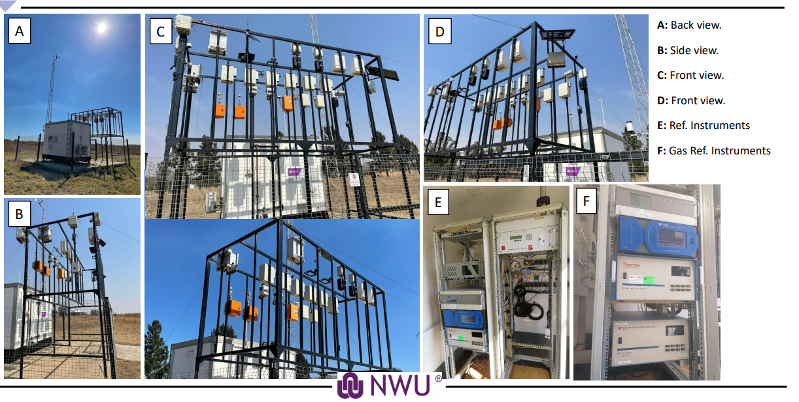

Recent
Low-Cost air quality sensors in South Africa (LCS-SA)
The LCS-SA project aimed to determine the precision, accuracy, reliability, rigidity and usability of low-cost air quality sensors within a South African setting.
A total of 28 low-cost air quality instruments were installed next to the Vanderbijilpark reference station (Figure 1-1). The project involved multiple stakeholders and instrument manufacturers that required the testing of instruments.
A report on the instrument performance was compiled for each stakeholder. The data analysis for this project was completed using two workflows.

Figure 1-1: Low-cost instruments at the NWU Vanderbijilpark station.
1. Data Ingest and Quality Control
The first workflow entailed the ingest and quality control of the instrument data.This is shown in the first Jupyter Notebook displayed here, and can also be seen at Data Ingest and Quality Control.
Initial analysis for all instrument is shown in Section 1.7.
2. Individual Stakeholder Analysis
The second workflow entailed the analysis of the instrument data for individual stakeholder reports. This is shown in the Jupyter Notebook displayed here, and can also be seen at Individual Stakeholder Analysis.
Further analysis is still ongoing.
This code was compiled together with:
- Roelof Burger
- Brigitte Language
- Aneska Richter
- Daniella Kristensen
- Victor Vepener
South African Highveld Air Quality
This study aims to investigate the air quality monitoring data of all the air quality stations on the South African Highveld. The Jupyter Notebook provides an introduction to some of the
preliminary analysis that has been done. The study is, however, still ongoing and subject to futher analysis.
This code was compiled with the help of:
{kind=link}